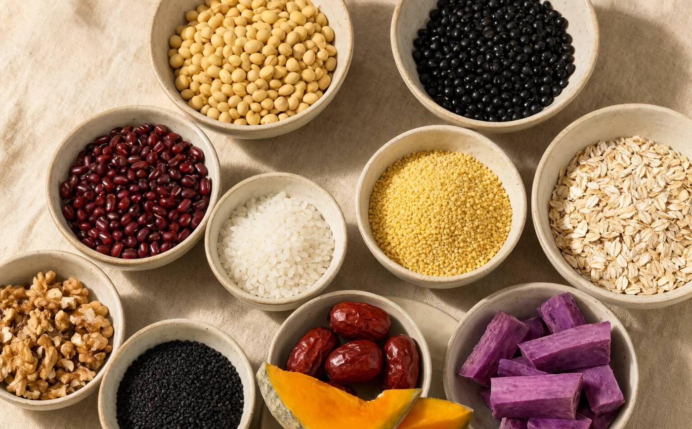
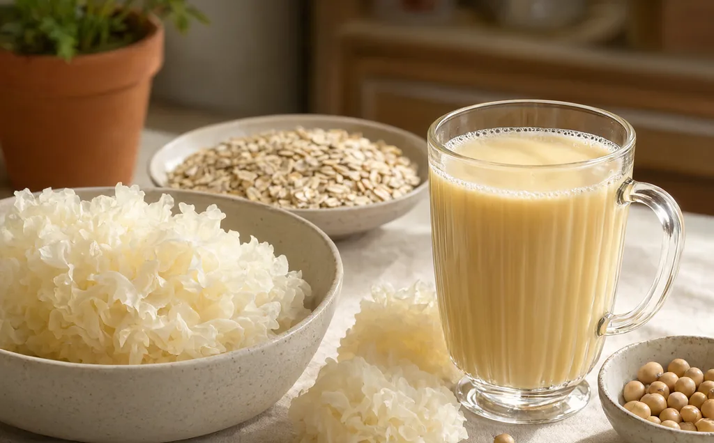

The Method
好喝不是玄学，
是四个旋钮。
豆浆的配方可以千变万化，但底层只有四件事：多浓、多细、多香、多甜。把这四件事拆开，你就不再需要照着别人的克数过日子。

01 — Four Dials
四个旋钮，分别管什么
很多人打豆浆失败，不是配方错，而是四个变量一起动：水少了、燕麦多了、糖提前放了、豆子没泡。结果就是又稠又腥又糊底，却不知道是哪一步出的问题。一次只调一个，才知道自己在调什么。
干料与水的比例。它决定这杯是“豆浆”“豆糊”还是“豆味水”。先定它。
燕麦、糯米、银耳、山药里的淀粉与胶质。少量就够，多了会糊底。
坚果焙香、豆子泡透、泡豆水倒掉。香气是“闻起来想喝”，不是加香精。
红枣、南瓜、紫薯、椰枣给自然甜；白糖最后加，才能尝准甜度。
先按 1:12 定水，再用 10–20 g 燕麦或糯米调稠度，然后用 3–5 颗红枣或 10 g 糖调甜，最后才考虑加坚果增香。每次都只改一样。
02 — Ratio
浓度：先定水，再谈其他
家用破壁机的常见区间是 干豆 : 水 = 1:7 到 1:15。低于 1:7 会稠到转不动、容易糊底；高于 1:15 就接近豆味水，豆香撑不住。你收藏的 15 款配方用 600–800 ml 水配约 80–100 g 干料，大致在 1:7–1:9，属于偏浓的家用口味。
| 浓度 | 干豆 : 水 | 以 80 g 干料计 | 口感 | 适合 |
|---|---|---|---|---|
| 清爽 | 1 : 15 | 约 1200 ml | 轻、豆香淡、不挂杯 | 夏天、搭配油腻早餐 |
| 日常 | 1 : 12 | 约 960 ml | 平衡，接近盒装豆浆 | 每天喝、全家 |
| 浓郁 | 1 : 9 | 约 720 ml | 厚、挂杯、豆香足 | 冬天、早餐代餐 |
| 糊状 | 1 : 7 | 约 560 ml | 接近米糊，需勺子 | 老人、术后流食（遵医嘱） |
比例按“干料总重 : 水体积”估算，单位分别是 g 与 ml。豆类吸水后重量约翻倍，所以泡豆后不要再用干豆比例加水。
03 — Calculator
把你的克数，换成水量
不用记表格。把你今天准备的干料总重填进去，选一个浓度，就能得到建议水量和大概杯数。
这是按干料估算的水量。豆子泡过已经吸水，改用湿豆称重时，按 1:6–1:8 重新算。
960ml
先加到 80%，程序结束后看稠度再补剩下的水。
水量按“干料 × 比例”估算，未计入食材吸水与蒸发。热饮不要超过机器热饮上限，宁可少加后补。
04 — Texture
顺滑：不是打得久，是搭配对
破壁机能把颗粒打得很小，但“顺滑”还有一半来自食材本身的淀粉和胶质。加对东西，比多打两分钟有用。

| 食材 | 作用 | 建议用量 / 800 ml | 注意 |
|---|---|---|---|
| 燕麦 | β-葡聚糖，显著增加黏稠度 | 15–25 g | 放多会变成糊，且容易糊底 |
| 糯米 | 支链淀粉，让口感更“糯” | 10–30 g | 水量要足，否则粘底 |
| 银耳 | 植物胶质，润、挂杯 | 1/3–半朵 | 去硬蒂，泡发后再打 |
| 山药 | 黏液蛋白，细滑 | 30–80 g | 戴手套去皮，切后泡水 |
| 大米 / 小米 | 米香与轻柔的稠度 | 15–30 g | 最不容易出错，适合新手 |
| 花生 / 核桃 | 油脂带来“滑”的错觉 | 10–20 g | 先焙香，放多会腻 |
如果打完仍有明显颗粒：豆子没泡透、水量太少、或者机器转速不足。先补 50–100 ml 水再打 30 秒，通常比继续干打更有效。
05 — Aroma
香气：把豆腥味挡在杯外
豆腥味主要来自豆皮和泡豆水里的脂肪氧化酶、皂苷等物质。它不需要“盖住”，只需要在入杯前处理掉。
- 泡透。冷水 8–12 小时，夏天放冰箱。泡到豆子胀大、能轻松掐开，没有硬心。
- 倒掉泡豆水。这一步能去掉大部分豆腥和涩味，别心疼。
- 冲洗两遍。直到水基本清澈，再入杯。
- 坚果先焙香。花生、核桃、黑芝麻用干锅小火或烤箱焙过，香气完全不同。
- 加一点“香”的配角。10 g 花生、3 颗核桃、5 g 黑芝麻，就足以托起整杯的香气。
带加热程序的破壁机可以用干豆功能，但干豆更难打细，豆腥也更明显。时间允许时，泡豆仍然是更稳的选择；赶时间再用干豆，并把水加到比例上限。
06 — Sweetness
甜感：让食材先甜，糖最后来
红枣、南瓜、紫薯、玉米、椰枣都能提供自然甜。它们甜得圆，不会像白糖那样一下子顶上来。先靠食材，再决定要不要补糖。
红枣 3–5 颗、南瓜 100 g、紫薯 40 g、椰枣 2 颗。适合每天喝。
冰糖 5–10 g、黑糖 8–15 g。程序结束后加，香气和甜度都更准。
为什么糖要最后加？一方面高温久煮会改变糖的香气；另一方面，提前加糖会让你在“还没尝”的时候就把甜度定死。打完尝一口，再一克一克地加，通常比配方里的量更少。
控糖人群不必追求“无糖也好喝”的配方神话。把豆量提高、水减少，让豆香更集中，比单纯减糖更有效。
07 — Process
五步流程，从干豆到一杯
干料按克称。量杯不准，豆子大小差异很大。
豆类 8–12 小时；米类 30 分钟；银耳 30 分钟；坚果 2–8 小时。
倒掉泡豆水，冲洗两遍；红枣去核；山药去皮；玉米剥粒。
先放液体再放固体，选对应模式。热饮不超过热饮上限。
结束后再加牛奶、糖、椰浆；尝味，必要时补热水或点动补打。
趁热倒温水，点动 30 秒；刀座缝隙用软刷，别用手抠。
先加水到杯体的一半，再放食材，最后补到目标水位。这样食材不容易粘在杯底，刀片起转也更顺。粘稠配方尤其明显。
08 — Safety
必须煮透：这不是口味问题
生豆浆含有皂苷、胰蛋白酶抑制剂等成分，未彻底加热可能引起恶心、呕吐、腹泻。豆浆在 80–90°C 会冒出大量泡沫，看起来像沸腾，其实并没有熟透，这叫“假沸”。
带加热程序的破壁机：选豆浆/米糊/玉米汁等加热模式，让机器完成煮沸。程序结束后等蒸汽散一散再开盖。
只搅打、不加热的机器：打完的生浆必须倒入厚底锅，大火煮开后转小火，保持沸腾 5–10 分钟，全程搅拌防糊底。不要看到泡沫就关火。
- 豆浆现做现喝最好；冷藏不超过 24 小时，喝前彻底加热。
- 不要长时间放在保温杯里，温热环境容易滋生细菌。
- 给婴幼儿喝豆浆不能替代母乳或配方奶；6 月龄后作为辅食的一部分，先少量尝试。
- 正在服用药物、孕期、慢性病人群，饮食调整请先咨询医生或营养师。
- 对大豆、坚果过敏者，请避开相应食材，并注意交叉污染。
09 — FAQ
常见的几个“为什么”
豆浆为什么有豆腥味？
主要是豆皮和泡豆水里的脂肪氧化酶、皂苷。泡透、倒掉泡豆水、冲洗两遍，能去掉大部分。另一个原因是没煮透——真正沸腾后再煮 5–10 分钟，豆腥会明显减弱。
为什么打完有一层厚厚的泡沫？
豆类蛋白和皂苷在高速搅打时裹入空气。加热型机器通常会消泡；如果没有，打完静置 1–2 分钟，或撇掉表面泡沫。泡沫本身无害，但会影响口感。水加太少、豆子太多时更明显。
为什么总是糊底？
三个常见原因：水太少、淀粉类（糯米/燕麦/山药）太多、糖或牛奶提前加入。先加水再放料，水量不低于配方下限，糖和牛奶留到最后加。已经糊底时，趁热用温水加小苏打浸泡，别用钢丝球刮。
可以睡前预约吗？
可以，但不要把豆子泡在水里一整夜再加热。夏季尤其不建议：室温泡豆容易变质。更稳的做法是豆子泡好、沥干放冰箱，早上直接入杯；或者用机器的预约功能，把浸泡和加热分开考虑。预约时长以 6–12 小时为宜。
牛奶、椰浆什么时候加？
程序结束后加，用点动搅 10–20 秒混合。牛奶长时间高温加热会损失香气，也更容易糊底；椰浆久煮容易油水分离。只有配方明确要求一起煮时才一起放。
豆浆可以代替牛奶吗？
作为日常饮品可以，但营养结构不同：豆浆的钙含量通常低于牛奶，蛋白质质量也不完全等同。儿童、孕妇、老年人如果用它替代牛奶，需要从其他食物补足钙和维生素 B12。不要把它当成“完全等价”的替换。
豆渣有什么用？
豆渣含水高，适合做豆渣饼、馒头、炒蛋或堆肥。想立刻用，加一个鸡蛋、两勺面粉和一点盐，平底锅小火煎成小饼。不想留就尽快处理，豆渣很容易变质。